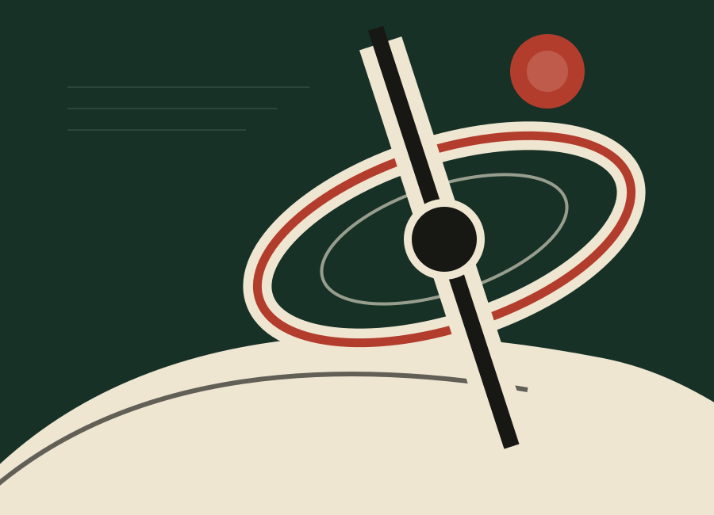

A new book by Mitch Kelly
Centrifuge
Inside the Emerging AI Organization
AI reveals what organizations actually are. Centrifuge examines what happens when capability becomes widely available and judgment becomes the real differentiator.

People.
Systems.
Judgment.
Systems.
Judgment.
Books
Ideas
People
ProgressUNRULY CHAIN
Ideas
People
ProgressUNRULY CHAIN
The imprint
The Unruly Chain
Unruly Chain is the publishing imprint of M&M Kelly LLC. It exists to publish books with a point of view, built with enough care to remain useful after the moment that produced them.
About the imprint →Some chains hold us back.Some are worth breaking.
Forthcoming
Last Old Man
The next title from Mitch Kelly. Details will be published here as the book develops.
Get updates →